November 2018 - December 2018
Let's first understand them.
What are they? What makes this platform different?
Airbnb Experience offers a selection of experiences and activities
to choose from. It tells the story of the hosts' love and perspectives,
whether it is their love of street food, sewing, or the history
of their neighborhood. family members with small businesses,
the mission of this nonprofit.
"The free exploring mind of an individual human
is the most valuable thing in the world."
What are they? What makes this platform different?
Airbnb Experience offers a selection of experiences and activities
to choose from. It tells the story of the hosts' love and perspectives,
whether it is their love of street food, sewing, or the history
of their neighborhood. family members with small businesses,
the mission of this nonprofit.
"The free exploring mind of an individual human
is the most valuable thing in the world."
Let's dive right in! Adventure and experience awaits!
1.A Role
1.B Skills
1.C Tools
UI/UX Designer
User Test
Research
Sketch
Prototypes
(Low-Fi & High-Fi)
Research
Sketch
Prototypes
(Low-Fi & High-Fi)
Adobe Photoshop
Adobe XD
Concept Board
Adobe XD
Concept Board
The Problem
Over this past decade, there has been a progression in the exchanges and sharing of new hobbies and activities. The increasing amount of work-related or recreational traveling today and curiosity for trying out new things has become an encouraged trend and integrated lifestyle.
What makes Airbnb Experiences unique is that the activities are designed and led by inspiring locals. And for this, Airbnb Experience is one of the go-to-destinations that users visit when discovering new activities.
However, some functions and services offered by Airbnb’s web platform can be unintuitive and overwhelming for some users, as well as lacking in options in other features.
Eminent Problems
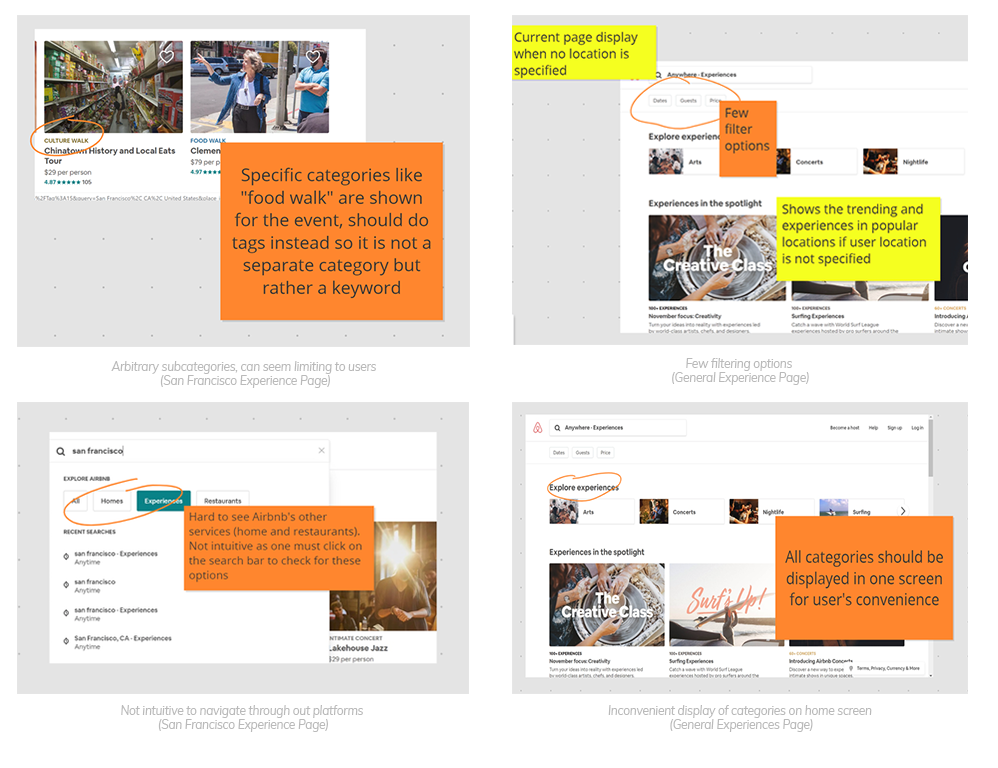
The Question
"How might we improve the user’s digital experience with the platform and streamline any add-ons to ensure a more intuitive and smooth navigation through the Airbnb Experience site?"
User Research & Key Insights
Research and comparisons between the variety of companies that offer similar services as Airbnb Experience were executed along with a couple surveys with about 10 college students and 10 adults all of which who have used and/or were curious of using the platform for their own personal needs.
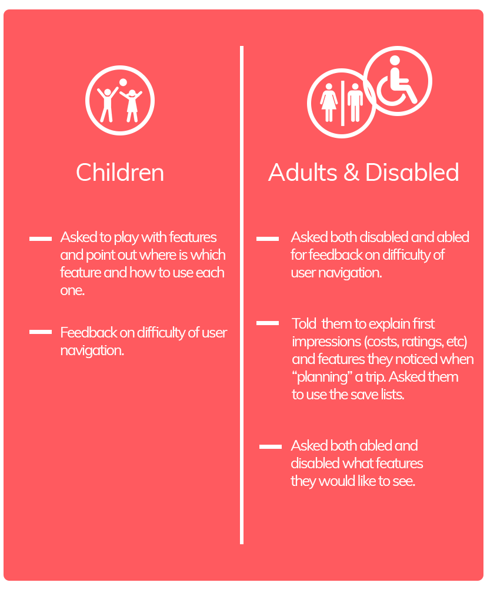
These were the insights and reoccurring themes recognized through the
interviews and research:
Unintuitive and Inconvenient Navigation
Some of the platforms across Airbnb can be challenging to find. To cross over some platforms (Airbnb Homes, Experiences, Restaurants), you must click on the search bar in order to see the different services. However, this can be confusing for users to
find as it is not the most straightforward, intuitive, or convenient. In addition to the cross-platforms, the surveyed users stated that they wish the categories were displayed all at the beginning in the same screen when they first enter the site for convenience, so they can immediately start filtering.
Confusing Subcategories
The arbitrary subcategories are too broad and should be taken care with the general categories alone. They can be mistaken as a new set of categories.
Lack of Incorporation for the Disabled Population
The activities and categories offered by Airbnb Experience secludes some of the needs of the disabled people population of which is a huge target audience. Some of those folks may want to discover activities that they are able to try out
without any inconvenience of endangerment to themselves.
For example, some may want to partake in classes or workshops that have extra accommodations to aid them in the process.
For example, some may want to partake in classes or workshops that have extra accommodations to aid them in the process.
Few Filtering Options
The options for filtering are very limited and can be expanded to suit more of the user’s needs and interests when exploring for a new activity.
Essence of the Product
So earlier in the opening paragraph and problem, we talked about what the product was and the service/features that were offered in the platform.
However, let’s take a look further on what more there is to uncover in this service.
The product sells more than just a platform that features activities and new hobbies. It tells a story from the host. It gives the user a sneak peek of the hosts’ world, perspectives, and so much more. These are unique activities planned, thought out, and executed by the host. The host takes the user through a dive into his or her own world and shares with them special knowledge, unique skills, and inside access to local places and communities that the users can’t find on their own. These one-of-a-kind experiences creates lasting connections and cherished memories.
And let’s not forget that you support your local and small businesses!
However, let’s take a look further on what more there is to uncover in this service.
The product sells more than just a platform that features activities and new hobbies. It tells a story from the host. It gives the user a sneak peek of the hosts’ world, perspectives, and so much more. These are unique activities planned, thought out, and executed by the host. The host takes the user through a dive into his or her own world and shares with them special knowledge, unique skills, and inside access to local places and communities that the users can’t find on their own. These one-of-a-kind experiences creates lasting connections and cherished memories.
And let’s not forget that you support your local and small businesses!
Goals & Objectives
- Intuitive Navigation
- Flow of ease in navigation through site. Relevant and main features should be a click away at the home page for user.
- Increase user’s control and number of options, not for abundance, but rather relevant and specific filters for more ideal activities and outcomes for user.
- More Personal Digital Interaction
- Incorporate features that bring more interaction and daily use in the form of a tool.
- Expand User Audience and Inclusiveness
- Include more activities that suit the needs of the disabled and features that aid the process for disabled people utilizing the platform.
- Refine Current Features and Aesthetics
- Improve the current features and aesthetics to bring a more refreshed and modern design trends to the site that is user-friendly and straightforward.
Design Implications
So, now that the goals and objectives are laid out to address each problem, let’s move on to what features and improvements are to be made that will accomplish these goals and objectives.
Goal 1 is “Intuitive Navigation.” To address the first objective of flow of ease in navigation, we want to highlight relevant and essential options that are convenient. What are these options?
Goal 3 is to “expand targeted audience and inclusiveness of the disability population.” In order to do this , I focused on 2 main disabilities of which are comprised of the “visually disabled” and “auditory disabled.” For this, the map feature was kept as an “on/off” tool for those who are auditory disabled, but also incorporated a microphone feature on the search bar for those who are visually disabled.
Goal 4 is to “improve current features and aesthetics” of the site. Improving not just the flow of navigation, but also so it is user-friendly and straightforward. It should be clear and easy to read for people (with the additions of disability accommodations implemented). Clean design that is up to date with the current design trends that enhance the user’s experience in navigating through the site.
Goal 1 is “Intuitive Navigation.” To address the first objective of flow of ease in navigation, we want to highlight relevant and essential options that are convenient. What are these options?
- THE CATEGORIES! Most of the time guests don’t know what exactly they are looking for to try out. To get a sense of what marbles they are dealing with, each category should be displayed in the home screen of the experience page. When the categories are laid out and apparent, at least one category will pique the interest of the guest.
However, there are arbitrary subcategories such as “Animal Encounter,” that will confuse the guest as another category. Prior to this, I decided to take a spin on it by converting them to tags in order for them to easily search those that fall under that tag, but this will also aid the company by allowing them to do customer and data analyses and track customer experience and progress across the different platforms. By having the data and information, the company can then improve certain features that reflect these results and data for a more optimal user experience.
- FILTERING! Other important options that should be in the filters include “Distance” and “Duration.” To be able to see how far and how long the activity takes are important factors that will guests often take into consideration say in a time crunch, spontaneous activity, etc. Group in this case refers to “guest” of the original Airbnb Experience page. I wanted to limit and only add on new filters that would help tailor the ideal Airbnb Experience for the user.
Goal 3 is to “expand targeted audience and inclusiveness of the disability population.” In order to do this , I focused on 2 main disabilities of which are comprised of the “visually disabled” and “auditory disabled.” For this, the map feature was kept as an “on/off” tool for those who are auditory disabled, but also incorporated a microphone feature on the search bar for those who are visually disabled.
Goal 4 is to “improve current features and aesthetics” of the site. Improving not just the flow of navigation, but also so it is user-friendly and straightforward. It should be clear and easy to read for people (with the additions of disability accommodations implemented). Clean design that is up to date with the current design trends that enhance the user’s experience in navigating through the site.
Constraints
- Time constraints can be an issue depending on when to deploy the features.
- To expand into the wishlist and planning tool will take some time to incorporate as well as have for the users to accept.
User Journey & Storyboarding
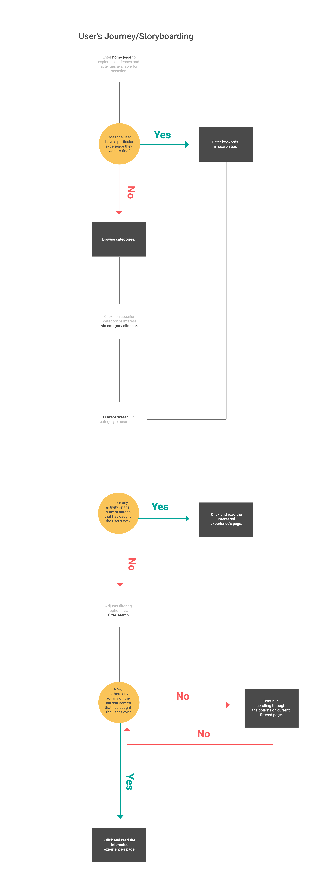

Mid-Fidelity
From the challenges that occurred for users, I redesigned the Airbnb Experience page in order to knock off these goals and problems so that interaction, navigation, and features would improve and become more interpersonal between the user and site. I kept in mind those that were disabled as I designed the lay out.
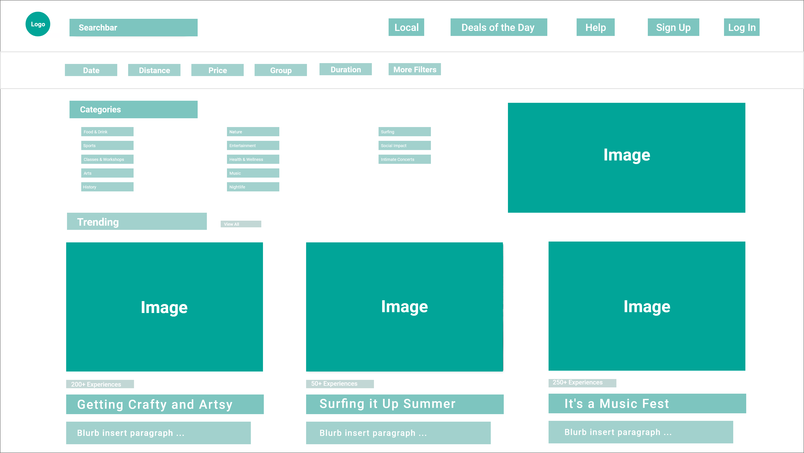
Home Page of Airbnb Experience
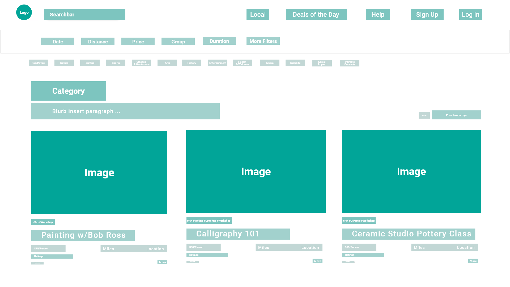
Selected Category (Art) Page
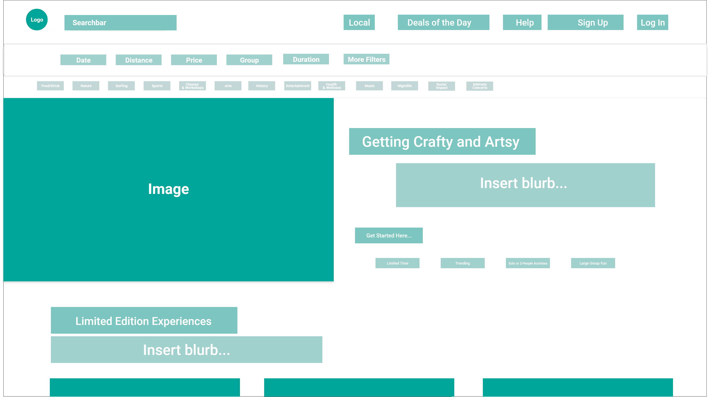
Limited Edition Top Screen Display
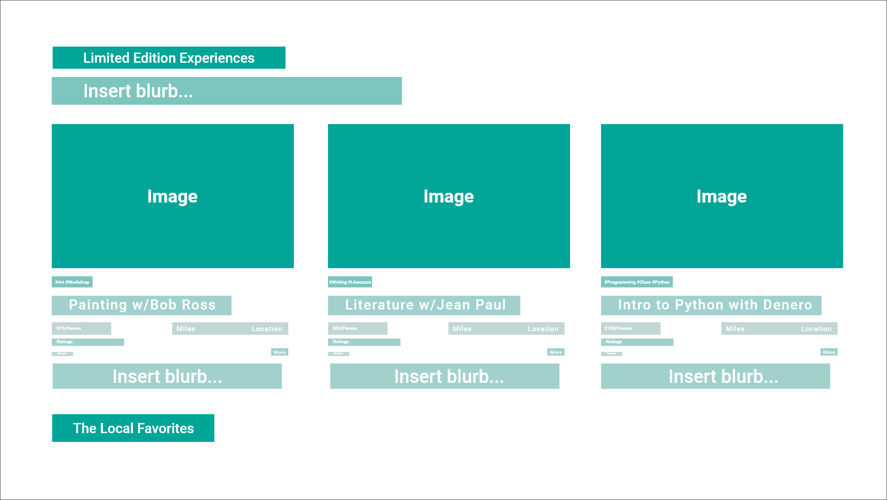
Limited Edition Bottom Screen Display
High-Fidelity
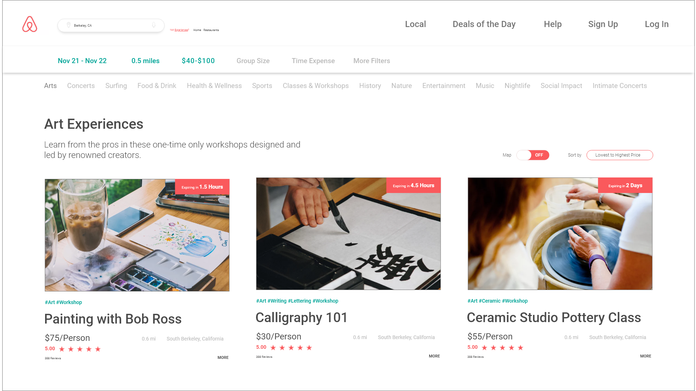
Selected Category (Art) Page
Accomplishes goals 1 & 3. Rather than have arbitrary subheadings that could be confused as a whole other category, tags are used to provide results that the guests may be interested in based on the key words and terms they search for. A right corner box is also used to indicate the time of expiration of these special activities and deals.
The location and mile distance is also noted at the convenience of the guest as in conjunction with the ratings and reviews. Lastly, there are also the microphone searchbar feature and map on/off feature.
The location and mile distance is also noted at the convenience of the guest as in conjunction with the ratings and reviews. Lastly, there are also the microphone searchbar feature and map on/off feature.
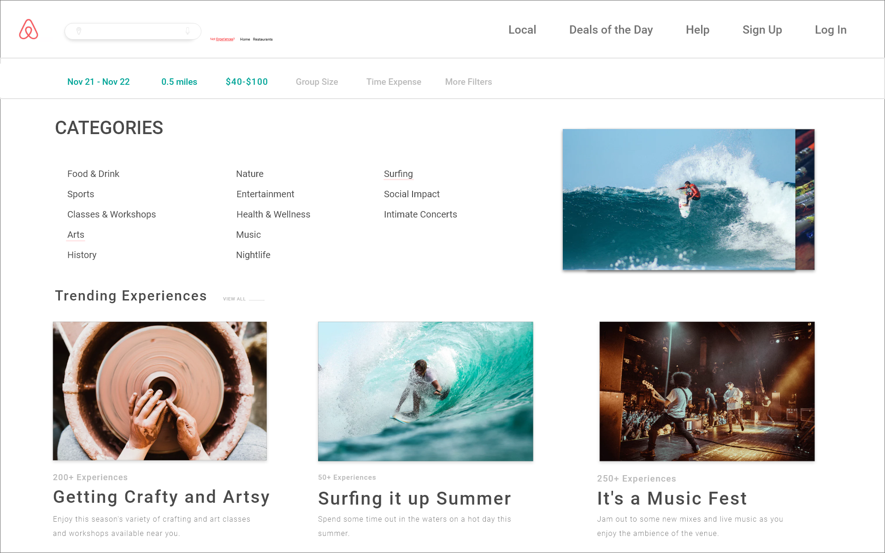
Home Page of Airbnb Experience
Accomplishes goals 1 & 3. For the front page, the categories are all laid out at the convenience of the guest in order to help them process what options are available to them in the platform.
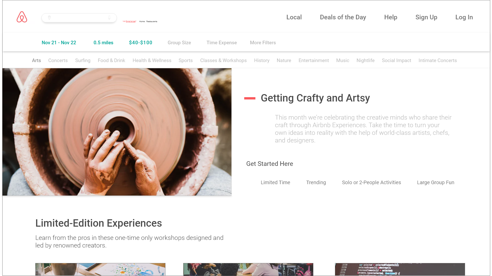
Limited Edition Top Screen Display High Fidelity
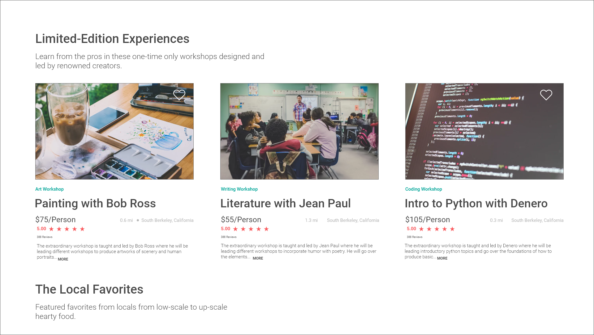
Limited Edition Bottom Screen Display High Fidelity
Accomplishes goals 3 & 4. A redesign of the current page for a specific category in order to bring a more modern and fresh twist in the design that allows the user to take their time to “breathe and browse through the headliners (limited edition, local favorites, etc) at ease,” while getting a sneak peak of what the category will offer through a brief paragraph.
Bonus Tool (Planner)
Accomplishes goals 2 & 3.
The planner tool works in conjunction with the saved list tool. With this, users can note which dates that they plan to visit these activities, restaurants, and homes. From there, they can set which activities they will participate from their saved items at which designated time. The palette allows the guest to visually see which is an experience, restaurant, or home. Not only that, the palette colors will be adjusted to their liking. Recommendations will be personalized and tailored to their interests based on recent clicks, location, and saved items. They will also have the ability to invite other users to edit the calendar. Once again, the microphone feature is implemented in each redesign page, but the map on/off feature is also available for planning to minimize space or make it convenient for auditory disabled people.
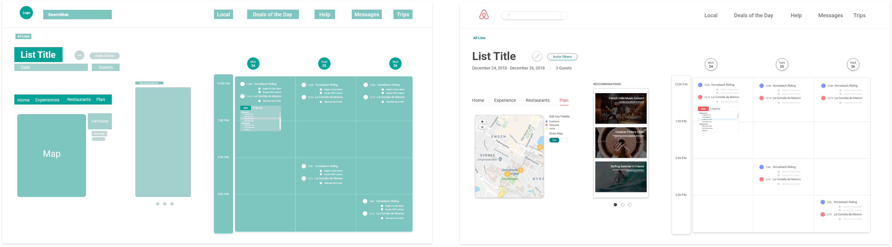
Reflections
I specifically chose this product due to the unique product and service it sells to its guests. The side project was fulfilling knowing that this new redesign would help improve the process for both sides, the hosts and guests.
Understanding what I was trying to sell was an important key and reminder as I curated my designs as that was to sell and share the hosts’ beautiful world and unique activities. Prior to this reminder, I was focused on also trying to have the new redesign emanate a comfortable and welcoming environment for both sides (guests and hosts).
It challenged myself to also improve any features that were available, but not utilized as often, which prompted me to create a new tool (planner) in order to not only knock this goal off, as well as engage more user interaction with the platform. It was a fun process in creating a new site with the new tool that was still in touch with the original theme of the site.
As I was designing, I kept finding more ways to improve and iterate as I went. Not only on my own features, but I also started noticing more discrete details of the site that could be improved, however, all this iteration was relevant and only for the better.
To learn how to create a design that bridges the user to the host and user/host to the platform immensely taught me how to put myself in the shoes of each role (guest, host, business).
Overall, a fun, impact, and fulfilling project! I definitely learned a ton as this was my first official, lengthy redesign. Now, onwards to more design projects and challenges!
-->
Understanding what I was trying to sell was an important key and reminder as I curated my designs as that was to sell and share the hosts’ beautiful world and unique activities. Prior to this reminder, I was focused on also trying to have the new redesign emanate a comfortable and welcoming environment for both sides (guests and hosts).
It challenged myself to also improve any features that were available, but not utilized as often, which prompted me to create a new tool (planner) in order to not only knock this goal off, as well as engage more user interaction with the platform. It was a fun process in creating a new site with the new tool that was still in touch with the original theme of the site.
As I was designing, I kept finding more ways to improve and iterate as I went. Not only on my own features, but I also started noticing more discrete details of the site that could be improved, however, all this iteration was relevant and only for the better.
To learn how to create a design that bridges the user to the host and user/host to the platform immensely taught me how to put myself in the shoes of each role (guest, host, business).
Overall, a fun, impact, and fulfilling project! I definitely learned a ton as this was my first official, lengthy redesign. Now, onwards to more design projects and challenges!